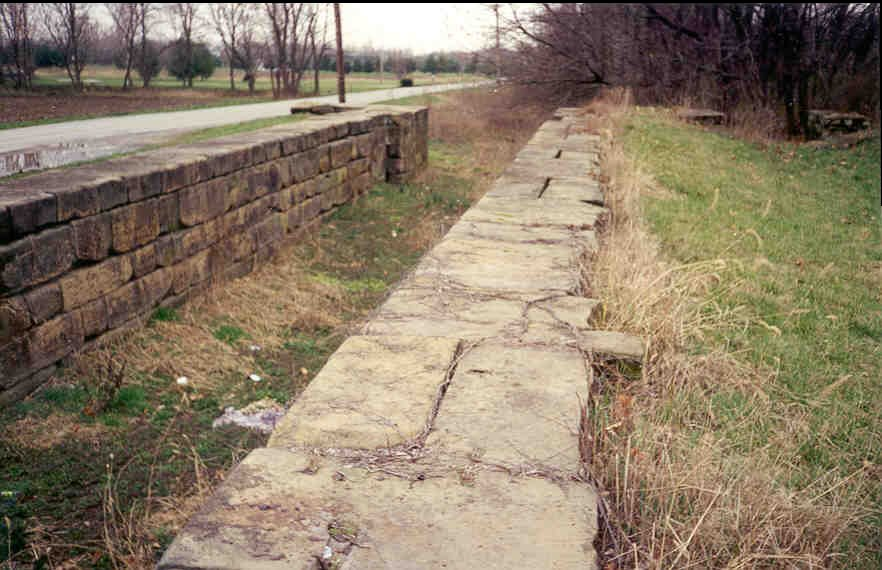
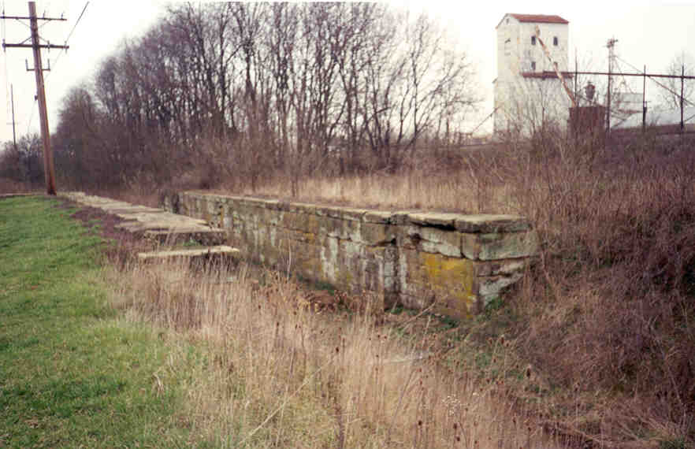
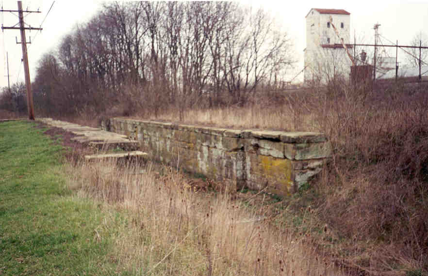

In Lockbourne, Ohio (just south of Columbus) you'll find several relics appropriate to the town's name: locks, from the canal which brought the town into existence.
A lock is a chamber in a canal which is used to raise or lower boats to a different water level. A boat enters the lock, the gate closes at the rear, and water is either pumped in or drained. After some time the front gate opens and the boat keeps going. Pretty simple, whether it's a massive container ship in the Panama Canal, or a canal boat pushed along with long wooden poles. Locks are necessary to prevent dangerous currents and waterfalls, both of which were devastating to the flat-bottomed canal boats of the nineteenth century.
Lockbourne is a genuine canal town. Laid out in the early 1800's by Colonel James Kilbourne, it came into existence because of the Ohio & Erie Canal, which was constructed between 1825 and 1847 and ran between Cleveland and Portsmouth. The first Lockbourne residents were there only because of the canal.


Above are the remains of lock 29, which lies on Canal Street off Lockbourne Road. The bottom of this one is a flooded mess. You can see where a tree grew up through some of the stones on the far side.


 

These are locks 26 and 27, on Canal Road east of the railroad tracks. Once, while doing donuts in his truck, my friend Hoss and I almost plunged into Number 27. Number 26 has a creek running through it, but 27 is dry.
This picture was e-mailed to me. It shows a wooden door which was uncovered at the bottom of one of the locks, possibly from a canal boat or something like that. It's the kind of thing that ends up on exhibit at the Ohio Historical Museum.
Lockbourne has other interesting relics, including the Plague Cemetery. It's located about five miles south of I-270, west of Route 23.
Ohio Canals (Great Site)
Ohio & Erie Canal National Heritage Corridor
Ohio's Historic Canals
Ohio Canals Recommended Reading
Cleveland State University: The Ohio & Erie Canal Resources
Back